transform 3D

与transform 3D变换主要有下面几个属性：
perspective，perspective-origin，transform-style，backface-visibility还有transform及其他属性。接下来，会一起学习几个属性的功能。
建议阅读前首先阅读transform 2D。
首先，先学习几个基本概念
坐标系、透视与灭点
下图可以看到清晰的看到x,y,z的正方向。
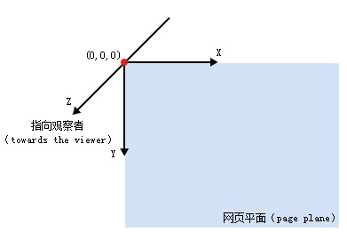注1
透视指的是三维变化，当我们看物体会有近大远小的体验，这与三维效果的呈现息息相关。perspective就是css中与透视相关的熟悉。
灭点是指，当景物离自己的位置越远时，就会越趋于集中到某一个点上。这个点就是灭点。通过perspective-origin可以改变灭点的位置（默认是中心点）。
perspective
指定观察者距离「z=0」平面的距离，为元素及其内容应用透视变换。
如下图中，d就是perspective的值。
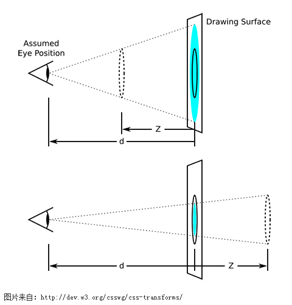
应用了perspective之后，当图片离我们越近，则图片越大，越远则越小。
可以举个例子
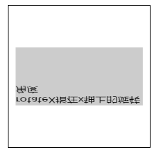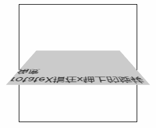
左右图中，灰色图片都在沿着x轴转动，但是左图没有设置perspective，右图设置了perspective：200px。这样，就可以在右图看到图片大小的变化，当图片转动到离眼睛近的时候，就会变大，远的时候就会变小。而左图永远好像在一个平面内，z=0上，没有大小的变化。
代码如下：
|
|
需要注意的一点是，当某个点z坐标超过perspective时，也就越过了我们的眼睛，将无法看到这个点。
perspective有2种用法：
perspective：100px;transform: perspective(100px);
第一种是将透视应用到其子元素上，所有的子元素共享一个透视距离，灭点。但是第二种是给每个元素使用一个透视距离。举个例子：
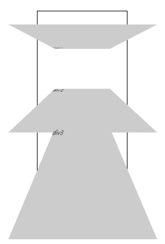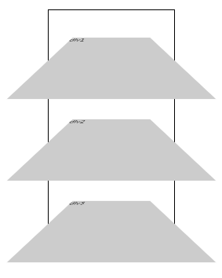
左图是perspective：100px；右图是transform: perspective(100px);2者的区别显而易见。左图共用了一个透视距离，3个图片都是好像都是从一个点进行观测，每个图片的观测到的大小是不一样的。而右图用了3个透视距离，都是100px;因此，每张图片表现出的样子是一样的。除此之外，对于左例可以用perspective-origin改变整体的灭点位置，而在右例上无法使用。
左例代码如下：
|
|
perspective-origin(x-axis y-axis)
| value | description |
|---|---|
| x-axis | left center right length % |
| y-axis | top center bottom length % |
如图，可以显示出灭点的作用,可以改变我们的视角。
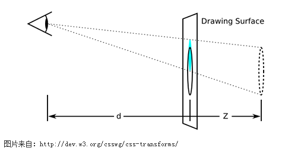
还是上面那个例子，当我们旋转了90°后，由于我们的灭点是在中心点，所以我们什么都看不到。如下：
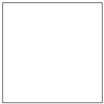
于是，我将改变改元素的灭点位置。注意，我们改变的是对于其子元素的视角。因此，在此例子上，我们必须把perspective-origin设置在.wrapper上。
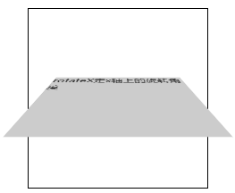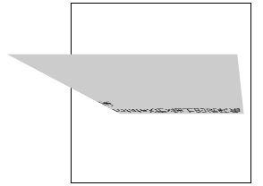
左图perspective-origin:center top;右图perspective-origin:right bottom;
代码如下：
|
|
|
|
transform-style
flat(默认) | preserve-3d
指定某元素的子元素是（看起来）位于三维空间内，还是在该元素所在的平面内被扁平化。当该属性值为「preserve-3d」时，元素将会创建局部堆叠上下文。
什么意思呢？「preserve-3d」会改变图像的绘制顺序，建立起正真的三维空间。语言苍白无力，上demo。
|
|
|
|
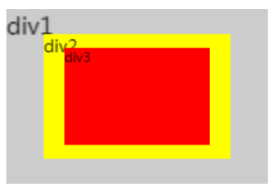
上图为结果，translateZ用于改变Z轴上的位置，可以知道div3在z=10px的位置，div2在z=30px，div1在z=50px。但是由于网页的绘制顺序，div3还是在最前面。
.wrapper上添加transform-style:preserve-3d；在z=50px的div1跑到了最前面
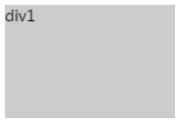
为了更好的看清这个例子，.wrapper上添加perspective-origin:center top;
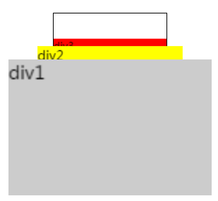
这样对transform-style是不是更了解了一些呢。
backface-visibility
visible（默认） | hidden
指定元素背面面向用户时是否可见。
以perspective小节中的动图2举例，可以看到当元素rotatex(90deg)之后，会展示出元素镜像的背面，若是我们希望不看到这个这个背面，则可以为这个div指定：
backface-visibility：hidden;结果如下：
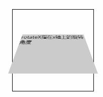
transform
3D 变换的transform函数有以下几种(与2D相关不再赘述)：
| function | description |
|---|---|
| matrix3d() | 接受16个参数，以一个4x4矩阵的形式指定一个3D变换 |
| translate3d(x,y,z) | 指定3D位移。第1个参数对应X轴，第2个对应Y轴，第3个参数对应Z轴，都不允许省略 |
| translateZ(z) | 指定对象Z轴的平移 |
| rotate3d(x,y,z,angle) | 指定3D旋转角度，前3个参数分别表示旋转的方向，第4个表示旋转的角度，都不允许省略 |
| rotateX(angle) | 指定对象在x轴上的旋转角度 rotate3d(1,0,0,angle) |
| rotateY(angle) | 指定对象在y轴上的旋转角度 rotate3d(0,1,0,angle) |
| rotateZ(angle) | 指定对象在z轴上的旋转角度 rotate3d(0,0,1,angle) |
| scale3d(x,y,z) | 指定3D缩放。第1个参数对应X轴，第2个对应Y轴，第3个对应Z轴，参数不允许省略 |
| scalez(z) | 指定对象的z轴缩放 |
如果你看了2D变换,这里的变换会很容易理解。有个几个点可以注意一下：
- matrix3d()与3D动画平移，旋转，倾斜都有关系，由于在应用时使用场景较少，不进行推到，有兴趣的朋友可以看看参考文件3。
- rotate3d(x,y,z,angle)：可以理解为以经过(0,0,0)到(x,y,z)的直线进行旋转，旋转angle度。
之后，应该还会生产一篇动画demo。